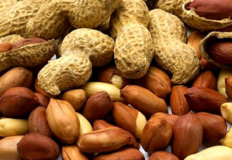

বাদামের পরিচিতি
বাদাম আমাদের কাছে একটি অতি পরিচিত নাম। বিভিন্ন রান্নায় আমরা বাদাম ব্যবহার করে থাকি,
বাইরে বেড়াতে গেলে অনেকেই বাদাম কিনে খান এবং প্রায় বেশিরভাগ মানুষের বাদাম খাওয়া এর
মধ্যেই সীমাবদ্ধ। বাদাম খেলেই মোটা হয়ে যাবেন_ এই ভয়ে বাদামের ধারেকাছে ঘেঁষেন না
অনেকেই। অথচ প্রোটিন, ভিটামিন, মিনারেল, ফাইবার ও তেলের জরুরি উৎস বাদাম। তবে মুখরোচক
বলে অল্প খাওয়াও মুশকিল। তাই পরিমিত পরিমাণে বাদাম খান এবং সুস্থ থাকুন।

বাদামের পুষ্টি উপাদান
বাদামে বিদ্যমান অসম্পৃক্ত ফ্যাটি অ্যাসিড, প্রোটিন, ফাইবার, ভিটামিন, খনিজ পদার্থ এবং অ্যান্টিঅক্সিডেন্টসমূহ হার্ট, ক্যান্সার ও অন্যান্য প্রদাহজনিত রোগের প্রতিরক্ষাকারী হিসেবে কাজ করে। যদিও বিভিন্ন বাদাম বিভিন্ন রোগ প্রতিরোধকারী হিসেবে কাজ করে থাকে, কিন্তু রোগ প্রতিরোধক অ্যান্টিঅক্সিডেন্টসমূহ প্রায় সব বাদামের ভেতরেই থাকে এবং এরা স্বাস্থ্যের জন্য অত্যন্ত উপকারী।
বাদামের উপকারীতা
কোলেস্টেরলের মাত্রা কমায়:
অনেক খাবারের ফ্যাট স্বাস্থ্যের জন্য খারাপ হলেও বাদামের ফ্যাট স্বাস্থ্যের জন্য ভালো
বলে নিশ্চিত করেছেন গবেষকরা। বাদামে বিদ্যমান অসম্পৃক্ত চর্বি বা ফ্যাট, ফাইবার ও
প্ল্যান্ট স্টেরল কোলেস্টেরলের মাত্রা কমায়। যারা উচ্চ কোলেস্টেরলের সমস্যায় আক্রান্ত
তাদের জন্য বাদাম অনেক কার্যকরী একটি ওষুধ হিসেবে কাজ করে।
হার্ট অ্যাটাকের ঝুঁকি কমায়:
ওমেগা-৩ ফ্যাটি অ্যাসিড একটি হার্টের স্বাস্থ্য রক্ষাকারী ফ্যাটি অ্যাসিড। যা হার্টের
ছন্দপতন রোধ করে এবং হার্ট অ্যাটাকের ঝুঁকি দূর করে। বাদাম এই ওমেগা-৩ ফ্যাটি অ্যাসিডের
বেশ ভালো একটি উৎস। কিছু মাছেও এই ফ্যাটি অ্যাসিডটি পাওয়া যায়। কিন্তু সব থেকে সহজলভ্য
ও প্রধান উদ্ভিজ্জ ওমেগা-৩ ফ্যাটি অ্যাসিডের উৎস বাদাম। এছাড়াও বাদামে রয়েছে ভিটামিন ই।
ভিটামিন ই ধমনীতে প্লাক হওয়া প্রতিরোধ করে ও প্লাক কমাতে সাহায্য করে। ধমনীতে প্লাকের
কারনে বুকে ব্যথা, করোনারি আর্টারি ডিজিজ বা হার্ট অ্যাটাক হতে পারে যা বাদামের ভিটামিন
ই দূর করতে সক্ষম। প্রতিদিন কিছু পরিমান বাদাম শরীরে এই ফ্যাটি অ্যাসিড ও ভিটামিন ই এর
ঘাটতি কমায় ও হার্টের সমস্যা জনিত রোগ থেকে হৃদপিণ্ডকে সুরক্ষিত রাখে।
রক্ত সঞ্চালনে সহায়তা করে:
বাদামে বিদ্যমান এল-আরজিনিন যা একটি অ্যামিনো অ্যাসিড হিসেবে পরিচিত ধমনীতে রক্ত
সঞ্চালন উন্নত করে। ধমনীকে নমনীয় করতে সহায়তা করে এল-আরজিনিন। বাদামের এল-আরজিনিন রক্ত
জমাট বাধার হাত থেকেও রক্ষা করে। ধমনীতে প্রবাহিত রক্তকে জমাট বাঁধায় বাঁধা দেয় এই
এল-আরজিনিন। এছাড়াও শরীরের যে কোন ক্ষত বা কাঁটা-ছেঁড়া দ্রুত নিরাময়ে বাদামের
এল-আরজিনিন অত্যন্ত কার্যকরী।
ডায়বেটিসের ঝুঁকি কমায়:
বাদামের ফাইবার রক্তের গ্লুকোজের পরিমান কমাতে অত্যন্ত কার্যকরী। এই ফাইবার ডায়বেটিসের
হাত থেকে রক্ষা করার ক্ষমতা রাখে। ডায়বেটিসে আক্রান্ত রোগী প্রতিদিন ডাক্তারের পরামর্শ
অনুযায়ী বাদাম খেলে শরীরের গ্লুকোজের পরিমান ঠিক রাখতে পারেন।